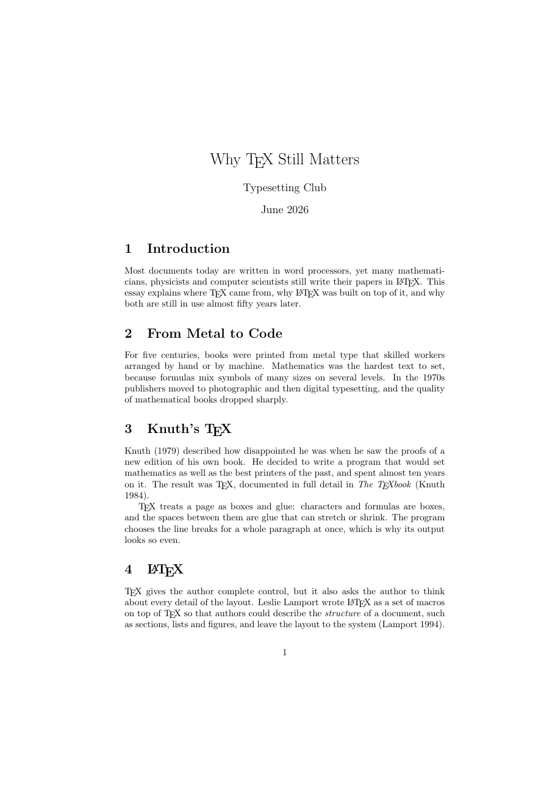
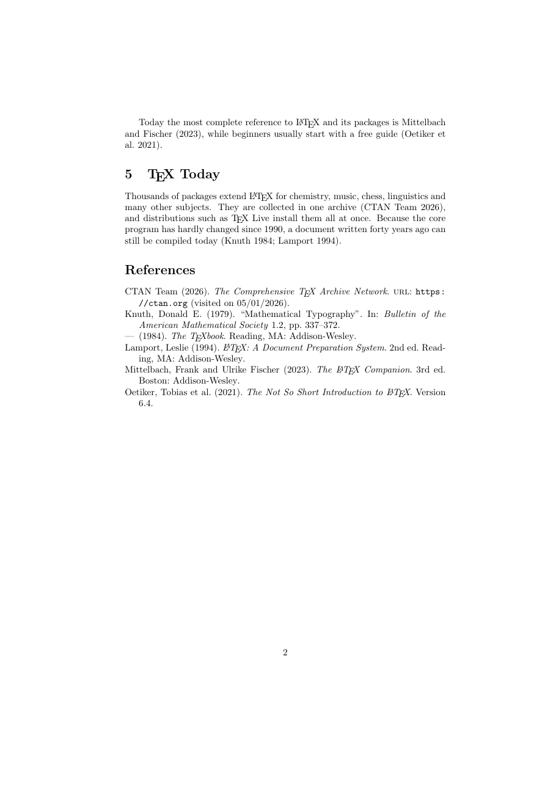

วัตถุประสงค์
เมื่อจบ Workshop นี้ นักศึกษาจะสามารถ
- เขียนฐานข้อมูลบรรณานุกรมในไฟล์
.bibสำหรับหนังสือ บทความวารสาร คู่มือ และเว็บไซต์ได้ - ใช้แพ็กเกจ
biblatexกับโปรแกรมbiberเพื่ออ้างอิงด้วย\cite,\parencite,\textciteและพิมพ์บรรณานุกรมด้วย\printbibliographyได้ - อธิบายลำดับการทำงาน pdflatex → biber → pdflatex และใช้
latexmkให้ทำลำดับนี้อัตโนมัติได้ - เปลี่ยนรูปแบบการอ้างอิง (
numeric,alphabetic,authoryear,ieee) ได้โดยไม่แก้เนื้อหา - อ่านคำเตือนเรื่องการอ้างอิงจาก LaTeX และ biber ได้
ไฟล์ที่ได้รับ
ดาวน์โหลด citations.zip แล้วแตกไฟล์ไว้ในที่ที่หาง่าย จะได้โฟลเดอร์ citations ดังนี้
citations/
├── doc.pdf ชิ้นงานต้นแบบ (2 หน้า)
├── warmup.tex ไฟล์สั้น ๆ สำหรับ Part A
├── main.tex ไฟล์เริ่มต้นสำหรับ Part B
├── content.txt เนื้อหาทั้งหมดของ Part B ไม่ต้องพิมพ์ใหม่
└── refs.bib ฐานข้อมูลบรรณานุกรม 6 รายการ (ใช้ทั้ง Part A และ B)ดูไฟล์แยกทีละไฟล์ได้ที่
warmup.tex,
main.tex,
content.txt,
refs.bib
เตรียมเครื่อง
ประมาณ 10 นาทีเปิดโฟลเดอร์ citations ใน Sublime Text และเปิดเทอร์มินัลในโฟลเดอร์เดียวกัน Workshop นี้ใช้โปรแกรมใหม่ 2 โปรแกรม ได้แก่ biber (จัดการบรรณานุกรม) และ latexmk (เรียกโปรแกรมต่าง ๆ ตามลำดับให้อัตโนมัติ) ตรวจว่ามีทั้งสองโปรแกรม
Windows
PS> biber --version
PS> latexmk --versionTeX Live มีทั้งสองโปรแกรมพร้อมใช้ ถ้าใช้ MiKTeX แล้ว latexmk แจ้งว่าหา Perl ไม่พบ ต้องติดตั้ง Strawberry Perl เพิ่ม (ขอไฟล์ติดตั้งจากผู้สอนได้) แล้วปิดและเปิดเทอร์มินัลใหม่
macOS
$ biber --version
$ latexmk --versionLinux
$ biber --version
$ latexmk --versionถ้าไม่พบคำสั่ง ให้ติดตั้งแพ็กเกจ biber และ latexmk ของระบบ (เช่น sudo apt install biber latexmk)
pdflatex ไม่อ่านไฟล์ .bib เอง ครั้งแรกมันจดรายการที่อ้างถึงลงไฟล์ .bcf จากนั้น biber อ่าน .bcf กับ .bib แล้วเขียนบรรณานุกรมที่จัดรูปแบบแล้วลงไฟล์ .bbl
สุดท้าย pdflatex อ่าน .bbl มาพิมพ์ latexmk รู้ลำดับนี้และสั่งให้เองครบทุกขั้น
อุ่นเครื่อง
ประมาณ 35 นาทีใช้ไฟล์ warmup.tex กับ refs.bib ทำทีละข้อ ข้อ A0–A1 สั่งโปรแกรมทีละตัวเองเพื่อให้เห็นการทำงาน ตั้งแต่ A2 จึงใช้ latexmk
- A0 เปิด
refs.bibใน Sublime Text แล้วดูโครงสร้างของแต่ละรายการ จากนั้นแทนบรรทัด% A0: ...ในwarmup.texด้วย
เพิ่ม\usepackage[backend=biber]{biblatex} \addbibresource{refs.bib}\cite{knuth1984texbook}ท้ายประโยคแรก แทนบรรทัด% A1: ...ด้วย\printbibliographyแล้วคอมไพล์ด้วยpdflatexครั้งเดียวLaTeX Warning: Citation 'knuth1984texbook' on page 1 undefined on input line 13 LaTeX Warning: Empty bibliography on input line 17. LaTeX Warning: There were undefined references. Package biblatex Warning: Please (re)run Biber on the file: (biblatex) and rerun LaTeX afterwards.PDF แสดงอะไรตรงตำแหน่งที่อ้างอิง แต่ละรายการใน
.bibมีส่วนใดบ้าง (ชนิด คีย์ และฟิลด์) - A1 สั่ง
biber(ใส่ชื่อไฟล์ไม่ต้องมีนามสกุล) แล้วสั่งpdflatexอีกครั้ง$ biber warmup $ pdflatex warmup.texเกิดไฟล์ใหม่อะไรบ้าง (
.bcf,.bbl,.blg) เปิดไฟล์.bblดูว่ามีอะไร - A2 latexmk ลบไฟล์ที่เกิดขึ้นทั้งหมดยกเว้น
.texและ.bibแล้วสั่ง
อ่านบรรทัดที่ขึ้นต้นด้วย$ latexmk -pdf warmup.texRun numberและRunningในเทอร์มินัล จากนั้นสั่งlatexmk -pdf warmup.texซ้ำโดยไม่แก้ไฟล์latexmk เรียกโปรแกรมใดบ้าง กี่ครั้ง และครั้งที่สองทำอะไร
ลองล้างไฟล์ด้วยlatexmk -c(เก็บ PDF ไว้) และlatexmk -C(ลบ PDF ด้วย) - A3 อ้างอิงเพิ่มใน 2 ประโยคที่เหลือ ด้วย
\cite{lamport1994latex}และ\cite{ctan}แล้วอ้างสองรายการพร้อมกันด้วย\cite{knuth1984texbook, knuth1979typography}ลำดับในบรรณานุกรมเรียงตามอะไร รายการใน
refs.bibที่ไม่ได้อ้างถึงปรากฏหรือไม่ - A4 รูปแบบ เปลี่ยนตัวเลือกเป็น
[backend=biber, style=alphabetic]แล้วstyle=authoryearและstyle=ieeeสั่งlatexmk -pdf warmup.texทุกครั้งการอ้างอิงในเนื้อความและรูปแบบบรรณานุกรมเปลี่ยนไปอย่างไร ต้องแก้เนื้อหาหรือไม่
- A5 ใช้
style=authoryearแล้วเปลี่ยน\citeในประโยคแรกเป็น\parenciteจากนั้นเขียนประโยคใหม่\textcite{lamport1994latex} wrote LaTeX on top of TeX.และลองใส่เลขหน้า\parencite[p.~20]{knuth1984texbook}\cite,\parenciteและ\textciteให้ผลต่างกันอย่างไร ควรใช้แบบใดเมื่อชื่อผู้แต่งเป็นประธานของประโยค - A6 เพิ่มรายการเอง เพิ่มหนังสือเล่มหนึ่งที่นักศึกษามีลงใน
refs.bibด้วยชนิด@book(ต้องมีauthor,title,publisher,year) แล้วอ้างถึง สำหรับผู้แต่งหลายคน ให้คั่นชื่อด้วยคำว่าandเช่นauthor = {Frank Mittelbach and Ulrike Fischer}ถ้าคั่นชื่อผู้แต่งด้วยจุลภาคแทน
andชื่อในบรรณานุกรมผิดอย่างไร - A7 ทำให้ผิดโดยตั้งใจ สะกดคีย์ผิดเป็น
\cite{knuth1948texbook}แล้วสั่ง latexmk
เปิดLatexmk: Summary of warnings from last run of *latex: Latex failed to resolve 1 citation(s) Latexmk: ====Problematic refs and citations with line #s in .tex file: Citation 'knuth1948texbook' on page 1 undefined on input line 13warmup.blgหาบรรทัดWARN - I didn't find a database entry for 'knuth1948texbook'PDF ยังสร้างได้หรือไม่ และผู้อ่านเห็นอะไรตรงตำแหน่งนั้น
- A8 แก้คีย์กลับ แล้วลบจุลภาคท้ายบรรทัด
publisher = {Addison-Wesley},ของรายการแรกในrefs.bibแล้วสั่ง latexmk ข้อความจาก biber จะคล้ายนี้ERROR - BibTeX subsystem: ... line 7, syntax error: found "address", expected end of entry ("}" or ")") (skipping to next "@")รายการใดหายไปจากบรรณานุกรม และหมายเลขบรรทัดนี้หมายถึงบรรทัดในไฟล์ใด
แก้ไฟล์กลับให้ถูกต้องก่อนไปต่อ
.bib, .bcf และ .bbl ทำหน้าที่อะไร (2) ทำไมต้องรัน pdflatex → biber → pdflatex
(3) latexmk -pdf และ latexmk -c ทำอะไร และ (4) จะเปลี่ยนรูปแบบการอ้างอิงทั้งเอกสารได้อย่างไร
งานหลัก
ประมาณ 50 นาทีเปิด main.tex และคัดลอกเนื้อหาจาก content.txt มาวาง เพื่อสร้างบทความ 2 หน้าที่มีการอ้างอิง 6 แหล่งให้เหมือน doc.pdf มากที่สุด คอมไพล์ด้วย
$ latexmk -pdf main.tex

คำแนะนำ
ใน content.txt ตำแหน่งที่ต้องอ้างอิงเขียนไว้ เช่น <<parencite ctan>> หมายถึงให้ใช้ \parencite{ctan} ไม่ต้องแก้ไฟล์ refs.bib
| ส่วนของชิ้นงาน | สิ่งที่ต้องใช้ |
|---|---|
| ส่วนนำ | biblatex ตัวเลือก backend=biber และ style=authoryear, \addbibresource{refs.bib} |
| หัวเรื่อง | \title, \author, \date, \maketitle |
| โลโก้ TeX และ LaTeX | \TeX{} และ \LaTeX{} (วงเล็บปีกกาว่างช่วยให้มีช่องว่างหลังโลโก้) |
| Knuth (1979) ต้นประโยค | \textcite |
| (Knuth 1984) ท้ายประโยค | \parencite และอ้างสองรายการพร้อมกันได้ในคำสั่งเดียว |
| References | \printbibliography ท้ายเอกสาร |
| ชื่อหนังสือ The TeXbook ในเนื้อความ | \textit และ \TeX book |
คำใบ้เพิ่มเติม (เปิดดูเมื่อติด)
- ถ้าการอ้างอิงยังเป็นคีย์ตัวหนา ให้ดูสรุปคำเตือนท้ายผลลัพธ์ของ latexmk ว่าคีย์ใดหาไม่พบ
- คีย์ต้องตรงกับใน
refs.bibทุกตัวอักษร รวมตัวพิมพ์เล็กและใหญ่ - ถ้าเปลี่ยนรูปแบบแล้วผลไม่เปลี่ยน ให้สั่ง
latexmk -Cแล้วสั่งlatexmk -pdf main.texใหม่ - คำว่า
visited onในบรรณานุกรมมาจากฟิลด์urldateของรายการ@online
ส่งงาน
เปลี่ยนชื่อไฟล์เป็น citations_<รหัสนักศึกษา>.tex แล้วสั่ง latexmk -pdf citations_<รหัสนักศึกษา>.tex ส่งไฟล์ .tex และ .pdf (ไม่ต้องส่ง refs.bib เพราะไม่ได้แก้ไข)
รายการตรวจสอบก่อนส่ง
ท้าทาย
ไม่บังคับ · ประมาณ 20–30 นาทีทำเพิ่มในไฟล์ใหม่ ข้อใดก็ได้
- C1 เปลี่ยนงาน Part B เป็น
style=ieeeและเปลี่ยน\textciteให้ประโยคยังอ่านได้ถูกต้องทำไมการอ้างอิงแบบตัวเลขจึงต้องเขียนชื่อผู้แต่งลงในประโยคเอง
- C2 ใช้ตัวเลือก
sorting=noneหรือsorting=yntแล้วสังเกตลำดับในบรรณานุกรม - C3 ใช้
\nocite{*}เพื่อพิมพ์ทุกรายการใน.bibแม้ไม่ได้อ้างถึง และเปลี่ยนหัวข้อบรรณานุกรมด้วย\printbibliography[title={Further Reading}] - C4 เขียนบทความสั้น 1 หน้าในหัวข้อที่สนใจ อ้างอิงอย่างน้อย 4 แหล่ง ได้แก่ หนังสือ บทความวารสาร เว็บไซต์ และอีกหนึ่งชนิดที่เลือกเอง
ข้อผิดพลาดที่พบบ่อย
| อาการ | สาเหตุและวิธีแก้ |
|---|---|
การอ้างอิงแสดงเป็นคีย์ตัวหนา และมี Please (re)run Biber |
ยังไม่ได้รัน biber ใช้ latexmk -pdf แทนการสั่ง pdflatex เอง |
WARN - I didn't find a database entry for '...' |
คีย์ใน \cite ไม่ตรงกับใน .bib หรือ \addbibresource ชี้ไฟล์ผิด |
ERROR - BibTeX subsystem: ... syntax error |
ไฟล์ .bib ผิดรูปแบบ มักเป็นจุลภาคหรือวงเล็บปีกกาที่ขาด ดูหมายเลขบรรทัดในข้อความ |
LaTeX Warning: Empty bibliography |
ยังไม่มีการอ้างอิงที่ biber หาพบเลย หรือยังไม่ได้รัน biber |
! LaTeX Error: File `biblatex.sty' not found. |
ติดตั้ง TeX ไม่ครบชุด ติดตั้งแพ็กเกจ biblatex เพิ่ม |
latexmk แจ้งว่าหา Perl ไม่พบ (Windows กับ MiKTeX) |
ติดตั้ง Strawberry Perl แล้วเปิดเทอร์มินัลใหม่ |
| ผู้แต่งหลายคนกลายเป็นชื่อเดียวยาว ๆ | คั่นชื่อผู้แต่งด้วย and ไม่ใช่จุลภาค |
| ผู้แต่งที่เป็นหน่วยงานถูกตัดเป็นชื่อและนามสกุล | ครอบด้วยวงเล็บปีกกาสองชั้น เช่น {{CTAN Team}} |
แหล่งอ้างอิง
- สไลด์บทเรียน Citations and Bibliography (Minimal Working Example, Bibliography Files, Supported Entry Types and Fields, Citation Styles, Bibliography Styles)
- เอกสารของ biblatex ในเครื่อง สั่ง
texdoc biblatexในเทอร์มินัล - The Not So Short Introduction to LaTeX (เปิดด้วย
texdoc lshort) หัวข้อ 4.1 Bibliography